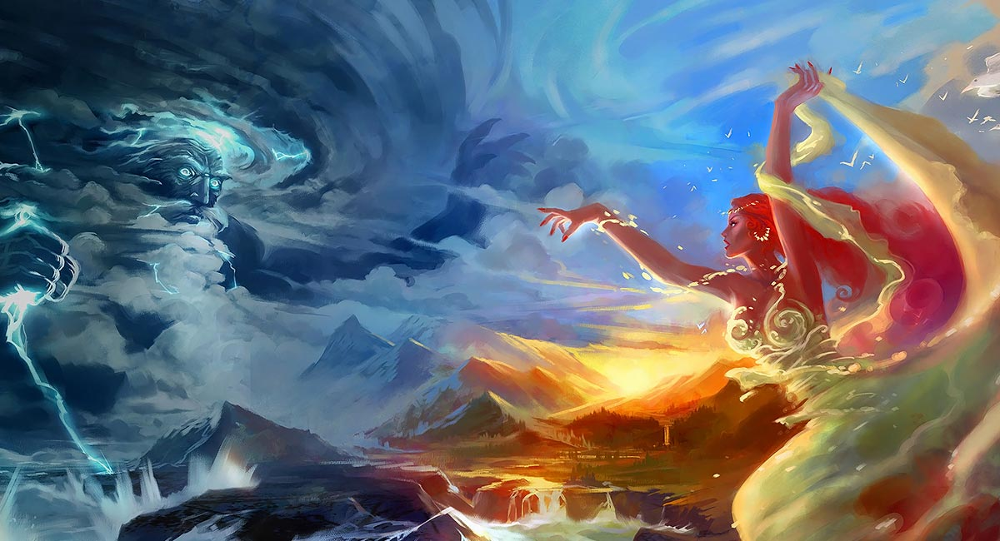
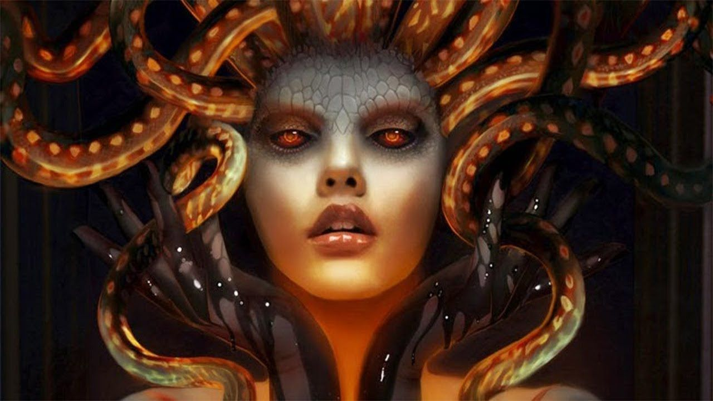
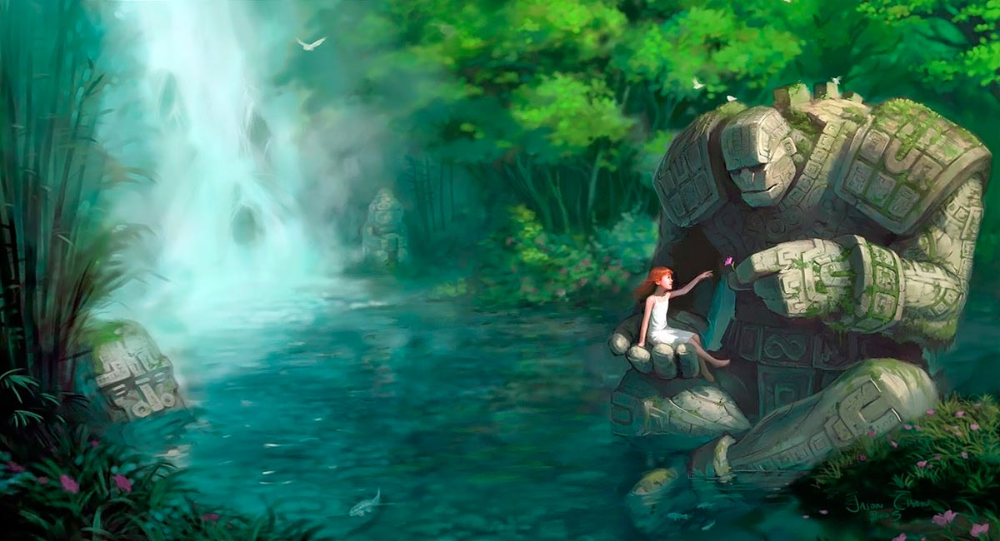
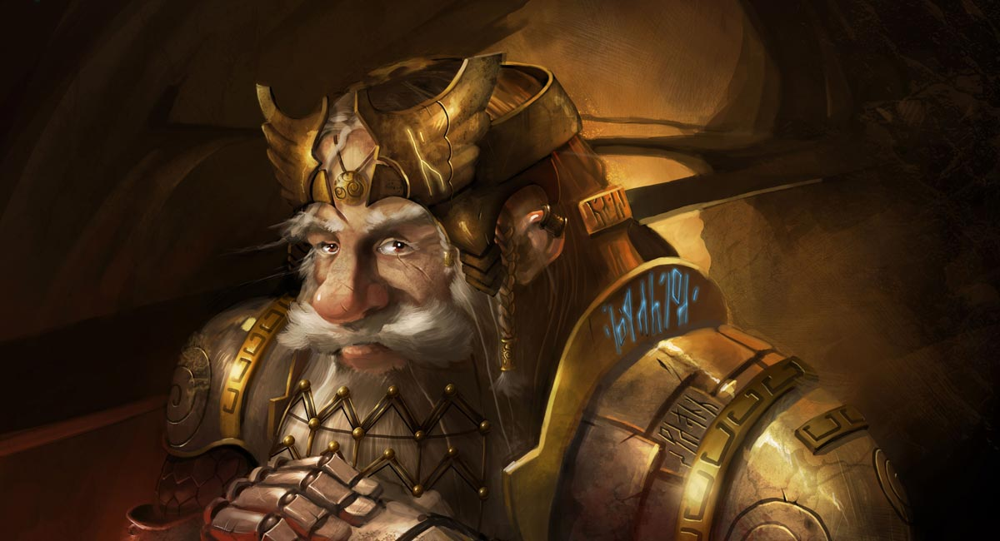

Mito bat elkarri lotutako mitoen bilduma gisa defini daiteke. Mito horiek elkarrekin oinarri historiko edo
zientifikorik ez duten galderak azaltzen edo erantzuten saiatzen diren kultura baten parte dira.
Era berean, mitoak garai historikotik kanpo dauden eta belaunaldiz belaunaldi transmititzen diren erlijio-abardura handiko kontakizun edo diskurtso gisa definitzen dira.
Mito horietako gehienak jainkoek, heroiek eta zenbait izakik egindako gertaera zoragarriei buruzkoak dira, eta nola sortu, gobernatu eta salbatu zuten lurra. Mito bat osatzen duten mitoen konbinazioa aldatu egiten da kultura batetik bestera, eta mito ezberdin asko sortzen dira, nabarmenenak Grezia eta Erroma direlarik. Hala ere, sekularizazioagatik edo historian garrantzia hartzen joan diren beste sinesmen batzuengatik,
kristautasuna kasu, fikziozkotzat edo fikziozkotzat hartu izan dira.

Izaki mitologikoak naturaz gaindiko ahalmenak eta formazio nahiko bereziak dituzten izakiak direla esaten da, hala nola animalien erdia, giza erdia.
Mexikoko mitologia tradizionaleko kondaira batzuetatik sortu ziren, gertakari esplikaezinei edo hondamendi naturalei erantzuna eman nahian.
Izaki mitiko asko hibridoak, kimerikoak edo teorimorfizatuak dira: bi animalia edo gehiagoren konbinazioa edo gizakiarekin, hala nola: Pegaso, Quetzalcóatl, Kukulkán. Dragoi eta txorrota mota ezberdinek, esfingeak eta kimerak berak animalia ezberdinen zatiak biltzen dituzte; zentauroak, gizon baten goialdea eta zaldi baten gorputza; minotauroak, gizon baten gorputza eta zezen baten burua; satiroek, gizonaren goiko aldea eta ahuntzaren beheko aldea; sirenek, emakumearen goiko aldea eta arrainaren beheko aldea; lamasuak edo kirubiak, giza burua duten animalia ezberdinen zatiak.
Batzuk benetako izakietan oinarritu ziren (animaliak, landareak edo giza arrazak.

Mitologia hitza grekotik dator eta bi hitzek osatzen dute:
Horrela ondoriozta dezakegu mitologia hitzaren jatorrizko esanahiak garai hartako poeta, kontalari eta apaizek beren jainkoen ideiak diskurtsoaren bidez herri batzar oso bati nola kontatzen zizkioten aipatzen duela. Kontakizun horiek herri osoan barreiatzen ziren, kulturan sustraitu eta erlijio moduko bat bihurtu arte.
Hau antzinako Grezian sortu zen; hala ere, mundu osoan zehar barreiatuz joan zen, hainbat atal eta sinesmen ezberdinekin, hainbat mitologia sortuz.
Mitologia guztiak ez du jatorria antzinako kulturetan. Mundu osoko jendeak mito berriak sortzen eta lehendik zeudenak berregiten jarraitzen du. Teknologia modernoek, hala nola argitaletxeek, filmek, telekomunikazioek eta Internetek aukera ematen dute ipuin herrikoiek, zurrumurruek eta mitoek inoiz baino azkarrago bidaiatzeko eta jende gehiagorengana iristeko. Mito eta kondaira moderno batzuen ezaugarri bereizgarrietako bat da sorkuntza artistiko gisa sortu zirela, nahiz eta haien sortzaileak aurreko gaietan oinarritu ahal izan ziren.
Mito eta kondaira guztiak bezala, mitologia modernoa bizitzaren mirariaren, emozioaren, misterioaren eta izuaren zentzu batetik sortzen da. Kondaira modernoek giza izaeraren alderdirik onenen eta txarrenen irudiak eskaintzen dituzte. Jokabide ona saritua izango dela iradokitzen dute, eta gaiztakeria eta gutizia zigortuak. Kondaira moderno batzuek islatzen dute jendeak beldurra diela aldaketa sozial azkarrei edo zientzia eta teknologiari; beste batzuek, berriz, bizitza arrunteko kaos nahasian patroi esanguratsuak aurkitzeko nahia adierazten dute.

Kondaira historia historikoa dela suposatzen da, baina ez du funtsik. Adibide nabarmenak dira Arthur erregea, Barbanegra eta Robin Hood. Ricardo erregea bezalako figura historikoen ebidentzia dagoen lekuan, Arturo erregea bezalako figurak elezaharrak dira, neurri handi batean, haiei buruz sortu diren istorio ugariengatik.
Kondairak istorioen gorputza edo garrantzi edo ospe iraunkorreko edozer inspiratzen duen edozer gauza ere aipatzen du. Istorioa ahoz transmititzen da, baina denborarekin eboluzionatzen jarraitzen du.
Literatura goiztiar asko elezahar bat bezala hasi zen, jatorriz ahoz transmititu ziren poema epikoetan berriro kontatua, eta gero, noizbait, idatziak. Horien artean, K.a. 800. urtearen inguruko La Iliada eta La Odisea poema homeriko greziarrak daude. 1100 inguruan, Chanson de Roland frantsesa. C.

Kondaira narrazio fantastikoa da, ahozko tradizioak mendetan zehar transmititzen duena; mitoa, berriz, narratiba tradizionala da, azalpenezkoa edota sinbolikoa, kultura eta/edo erlijio jakin batekin lotura handia duena.
Mitoak bizitzaren gertakari nagusiak, fenomeno naturalak, munduaren eta gizakiaren jatorriak jainko, erdijainko eta heroien bidez azaldu nahi ditu (guztiak naturaz gaindiko izakiak). Mitoa errealitatea azaltzeko lehen saiakera dela esan daiteke
Mitoa asko nahasten da kondairaren kontzeptuarekin, baina honek ez du historian eta errealitatean egiazta daitekeen iturririk, naturaz gaindiko istorioak baino ez dira, greziar mitologiaren eta beste askoren kasuan bezala. Mitoa ez da jatorrizko herriena bakarrik, ezta sortzen ari diren zibilizazioena ere, baizik eta garai eta kultura guztietan existitzen da, errealitatea ulertzeko giza moduaren osagai bereizezin gisa.

| Izakia | Izakiare deskribapena |
|---|---|
| Elfo | Izaki txikiak, gizakien alderdiak dituztenak |
| kimera | alegiazko munstroa, lehoi burua, ahuntz sabela eta herensuge buztana dituen garra botatzen duena. |
| Gargola | Gargolak oso munstro magiko basatiak dira, itxura txarrekoak. |
| Cecaelia | itsasgizona da, gehienetan emakume gorputzarekin, eta beheko aldea olagarroarenaren antzekoa. |
| Golem | Golem bat oinarrizko indarretan oinarrituta magikoki sortutako izaki bat da. |
Dragoiak narrasti hegodunak dira, eta tamainari eta ezaugarriei dagokienez, arrazaren edo jatorriaren arabera alda daitezke.
Mantikora, kimera eta esfingearen antzekoa, hibridoak bezala ezagutzen dugun izaki mitologikoetako bat da, lehoi, giza buru, herensuge edo saguzar hegoak eta eskorpioi edo herensuge buztana baititu.
Izaki fantastikoak dira, oso ahaltsuak; nagak izaki erdi-bizidunak dira, eta suge-gorputza eta giza soina dute, oro har emakume-gorputza. Gaiztotzat hartzen ez badira ere, nagak oso argiak dira eta hozkada pozoitsu eta hilgarria dute.